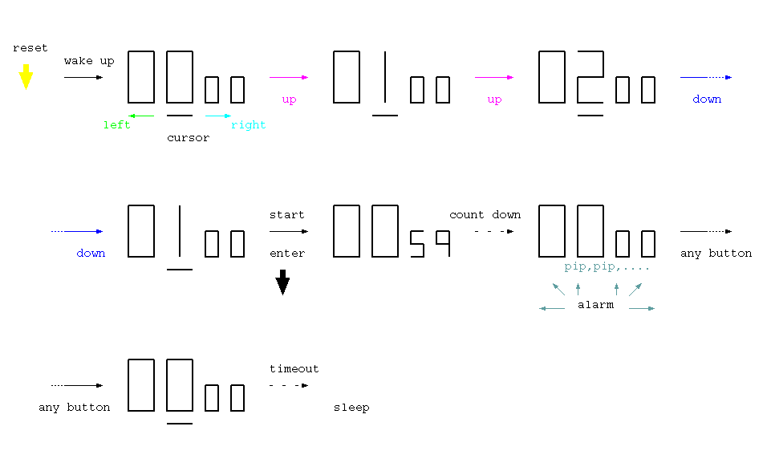

<!-- header -->

<!-- panorama -->

<p></p>
	
<!-- schematic -->

<!-- layout -->

<nav>
	<ul>
	<li><a href="../../../parts/stm32l052k8t/description.html" target="_blank">MCU (STM32L052K8T)</a></li>
	<li><a href="../../../parts/aqm1248/description.html" target="_blank">Graphic LCD (AQM1248A-RN)</a></li>
	<li><a href="../../../parts/max1724/description.html" target="_blank">DC-DC converter (MAX1724)</a></li>
	<li><a href="../../../parts/skrg/description.html" target="_blank">Tactile switch</a></li>
	<li><a href="../../../parts/pkm13epyh4000/description.html" target="_blank">Piezoelectric sounder</a></li>
	</ul>
</nav>

<!-- footer -->


